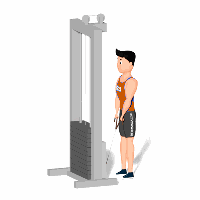

Remada Alta com Corda

O exercício é importante para aumentar o recrutamento dos deltoides e o trapézio, além de ajudar a reduzir o estresse das articulações.
Ficha Técnica
Tipo: Musculação
Grupo Muscular: Ombro
Aparelho: Nenhum
Músculos: Nenhum
Como realizar
- De pé, com a polia baixa segure a corda com a pegada pronada e com as mãos alinhadas com os ombros;
- Mantenha a coluna ereta durante todo o exercício;
- Depois traga a barra para cima, flexionando o cotovelo até que este esteja na mesma linha dos ombros;
- Em seguida, lentamente retornar à posição inicial.
 RC STORE
RC STORE